Science of Science — Paper Curation
Zotero "Science of Science" 컬렉션 | 2026년 출판 논문
Highly Accurate Protein Structure Prediction with AlphaFold

50년 난제인 단백질 구조 예측 문제를 원자 수준 정확도로 해결한 획기적 연구로, Evoformer와 IPA 등 독창적 아키텍처 설계가 물리적/기하학적 귀납적 편향을 딥러닝에 성공적으로 통합했다. 구조 생물학과 AI 분야 모두에 근본적 영향을 미친 랜드마크 논문이다.
Scaling Deep Learning for Materials Discovery

딥러닝의 스케일링 법칙을 재료 발견에 적용하여 알려진 안정 재료의 수를 한 자릿수 확장한 기념비적 연구로, active learning 기반 자기강화 발견 프레임워크의 유효성을 대규모로 실증했다. 합성 가능성과 동적 안정성 검증이 향후 과제로 남지만, 재료 과학의 패러다임 전환을 이끄는 성과다.
The Diversity-Innovation Paradox in Science

과학에서 다양성과 혁신, 그리고 경력 보상 사이의 구조적 역설을 120만 명 규모의 데이터로 실증한 획기적 연구로, Science of Science 분야에서 다양성 담론의 기초가 되는 핵심 논문이다. 다만 이름 기반 인구통계 추론과 관찰 연구 설계의 한계로 인과적 해석에는 신중함이 필요하다.
Women Are Credited Less in Science Than Men
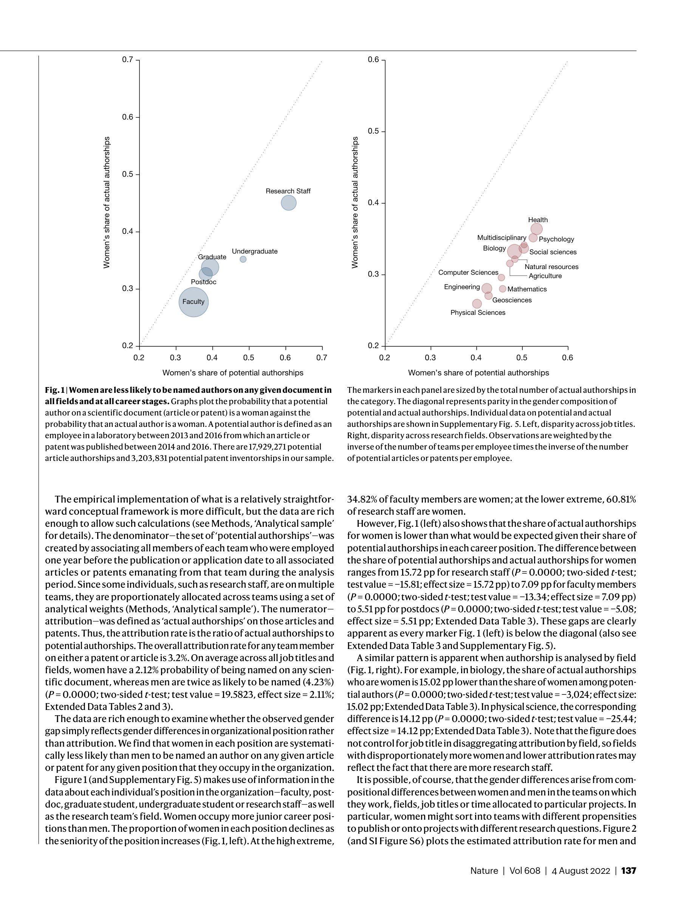
과학에서 여성의 기여가 체계적으로 인정받지 못한다는 것을 대규모 행정 데이터로 최초로 실증한 획기적 연구로, 관찰할 수 없었던 "누락된 저자"를 가시화한 방법론적 혁신이 돋보인다. Nature 게재에 걸맞은 높은 완성도를 갖추고 있다.
Historical Comparison of Gender Inequality in Scientific Careers Across Countries and Disciplines

150만 명의 완전한 출판 경력 데이터를 통해 "생산성 퍼즐"의 근본 원인이 연간 생산성 차이가 아닌 경력 지속 기간의 차이임을 밝힌 기념비적 연구로, 성별 불평등 논의의 패러다임 전환을 이끌었다. Barabási 그룹의 데이터 과학적 역량이 유감없이 발휘된 논문이다.
Rethink Funding by Putting the Lottery First
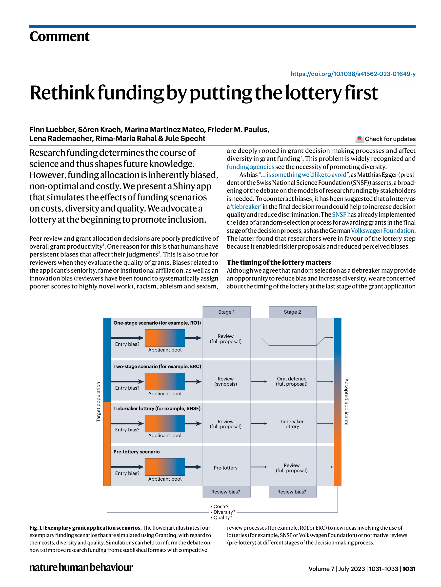
연구비 배분의 추첨 시점을 처음으로 옮기자는 발상은 신선하고 시의적절하나, 3페이지 Comment 특성상 실증 근거와 구체적 제도 설계가 부족하여 정책 제언으로서의 설득력이 아직 제한적이다.
OpenAlex: A fully-open index of scholarly works, authors, venues, institutions, and concepts

MAG 중단이라는 학술 인프라 위기에 대한 시의적절하고 실용적인 해법으로, 완전 오픈 원칙과 대규모 데이터 커버리지의 조합이 학술 커뮤니티에 막대한 영향을 미치고 있으나, 기술적 상세와 품질 검증이 짧은 컨퍼런스 논문 형식의 한계로 부족하다.
Updated science-wide author databases of standardized citation indicators
전 세계 과학자의 인용 영향력을 표준화된 방식으로 비교할 수 있는 실용적 데이터베이스로서 학계에 막대한 영향력을 행사하고 있으나, Scopus 종속성과 "상위 2%" 프레이밍의 오남용 가능성이 근본적 한계로 남아 있다.
Papers and patents are becoming less disruptive over time

과학의 파괴성이 수십 년간 전 분야적으로 감소해왔다는 강력하고 도발적인 실증 결과를 제시한 기념비적 연구이나, CD index의 구조적 한계와 인과 메커니즘의 불충분한 규명이 결론의 해석에 주의를 요한다.
Scientific discovery in the age of artificial intelligence

AI4Science 분야의 현황과 전망을 과학적 발견의 전 과정에 걸쳐 포괄적으로 정리한 권위 있는 리뷰로, 분야의 지형도를 파악하는 데 탁월하나, 리뷰 특성상 개별 기술에 대한 깊이와 비판적 분석은 제한적이다.
S2ORC: The Semantic Scholar Open Research Corpus
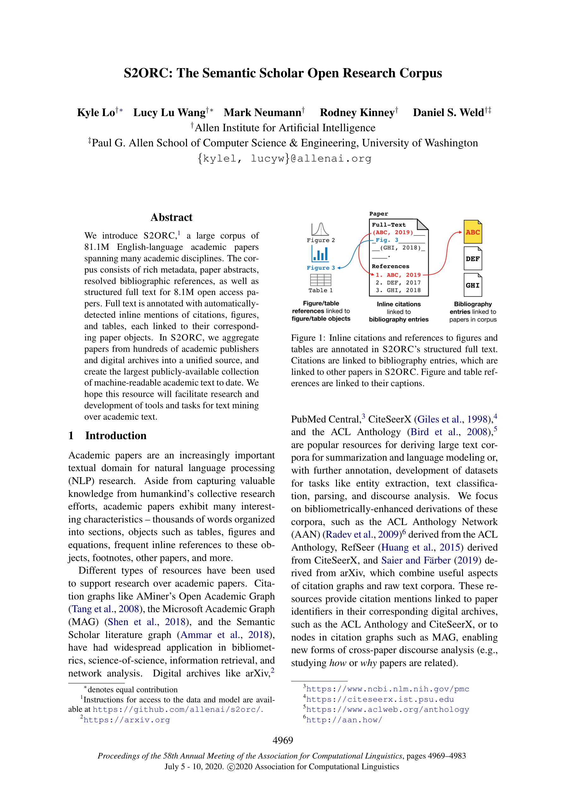
학술 텍스트 마이닝의 기반 인프라로서 탁월한 기여를 한 자원 논문으로, 81.1M 논문의 통합과 구조화된 전문 제공은 science of science 및 NLP 연구에 광범위한 영향을 미쳤으며, CORD-19 등 후속 프로젝트를 통해 실질적 사회적 임팩트를 입증하였다.
Automating the practice of science: Opportunities, challenges, and implications

과학 자동화의 현황, 기회, 과제, 함의를 다학제적 관점에서 포괄적으로 정리한 시의적절한 관점 논문으로, 특히 자동화의 기술적 한계와 규범적 한계를 구분하는 프레임워크와 "자동화의 역설" 논의가 연구자와 정책 입안자 모두에게 유용한 사고 틀을 제공한다.
Global citation inequality is on the rise

400만 저자 규모의 글로벌 데이터셋을 활용하여 인용 불평등의 심화를 실증적으로 입증한 중요한 연구로, 인용 인플레이션 보정과 full/fractional count 이중 분석, 국가/기관 수준 분해 등 방법론적으로 견고하며, 과학 정책과 연구 평가 시스템의 재설계에 대한 근거를 제공한다.
Scientific production in the era of Large Language Models

LLM이 과학 생산을 어떻게 재편하고 있는지를 생산성, 품질 신호, 문헌 발견의 세 차원에서 대규모 데이터로 실증한 획기적 연구로, 특히 글쓰기 복잡성-품질 관계의 역전 발견은 과학 평가 시스템의 근본적 재설계 필요성을 제기하며 Science 게재에 손색없는 시의성과 영향력을 갖춘 논문이다.
Intersectional inequalities in science

교차성 이론을 대규모 계량서지학에 적용하여 인종-젠더-주제-인용의 체계적 관계를 실증한 선구적 연구로, 특히 소수 집단의 이중 인용 불이익(between/within-topic)과 반사실적 지식 손실 추정은 과학 정책의 근거로서 높은 가치를 가지며, 과학의 능력주의 신화에 대한 실증적 도전을 제공한다.
Gender-diverse teams produce more novel and higher-impact scientific ideas

660만 편 의학 논문을 활용한 대규모 실증 분석으로, 성별 다양성 팀의 신규성·영향력 우위를 설득력 있게 입증한 중요한 연구이나, 관찰 연구의 한계로 인과 메커니즘 규명은 후속 과제로 남아 있다.
Global patterns of migration of scholars with economic development

3,600만 편 서지 데이터를 활용하여 학자 이주의 U자형 발전-이주 관계를 발견한 중요한 기여이나, Brief Report의 제약으로 메커니즘 분석이 부족하고, 이주 방향·분야별 이질성·인과 분석은 후속 과제로 남아 있다.
Public Use and Public Funding of Science
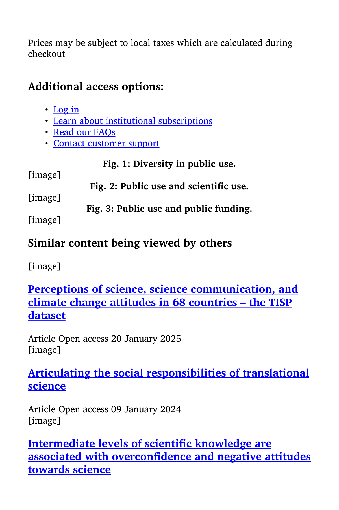
과학의 공적 사용과 자금 지원 사이의 정렬을 대규모 데이터로 실증한 중요한 연구로, 과학 투자의 사회적 정당성에 대한 실증적 근거를 제공한다. 다만 PDF 전문 접근 불가로 방법론적 세부사항에 대한 평가에는 한계가 있다.
Coevolution of Policy and Science During the Pandemic
팬데믹 위기에서 과학과 정책의 실시간 공진화를 대규모로 추적한 시의적절한 연구로, "과학이 들리고 있지만, 모든 곳에서 들리는 것은 아니다(Science is being heard, but not everywhere)"라는 결론이 인상적이다. Policy Forum 형식의 제한으로 방법론적 깊이는 다소 아쉬우나, Science 게재에 걸맞은 임팩트 있는 메시지를 전달한다.
Public Profile Matters: A Scalable Integrated Approach to Recommend Citations in the Wild

인용 추천 시스템에서 "공적 프로필"이라는 직관적이면서도 효과적인 개념을 제안하고, 비학습 모듈과 경량 리랭커의 조합으로 대규모 범용 모델을 능가하는 실용적 시스템을 구축했다. 방법론적 완성도가 높으나, Science of Science 관점에서의 이론적 기여보다는 정보검색 공학 기여에 가까운 논문이다.
Which stylistic features fool ChatGPT research evaluations?

LLM 기반 연구 평가의 실질적 위험 요소인 언어적 복잡성 편향을 대규모 데이터로 실증한 시의적절한 연구이나, 상관분석에 머물러 인과적 메커니즘 규명과 편향 완화 방안의 실험적 검증이 후속 과제로 남아 있다.
Polymer Science Research in India: A Scientometrics Study
인도 고분자 과학의 연구 생산성을 국가-기관-주제별로 정리한 기초적 기술 통계 연구이나, 데이터 범위 불일치, RGR 계산 오류 의심, 주제 분류 오류("Composite number"), 인용/협력 분석 부재 등 방법론적 한계가 심각하여 학술적 기여가 매우 제한적이다.
Risk and Artificial Intelligence Adoption: A Scientometric and Thematic Evolution Analysis Based on Scopus and Web of Science (1990-2025)

AI 도입에서 리스크 개념의 진화를 주제 매핑, Sankey 진화 분석, 공인용 네트워크로 다각도로 추적한 시도는 의미 있으나, 612편의 제한된 코퍼스, 검색 전략 미공개, "optional" 섹션 존재 등 방법론적 완성도가 부족하며, 게재 저널의 학술적 수준을 고려할 때 해당 분야 주요 연구로 보기 어렵다.
Organisational accounts engaged in scholarly communication on Twitter: Patterns of presence, activity and engagement
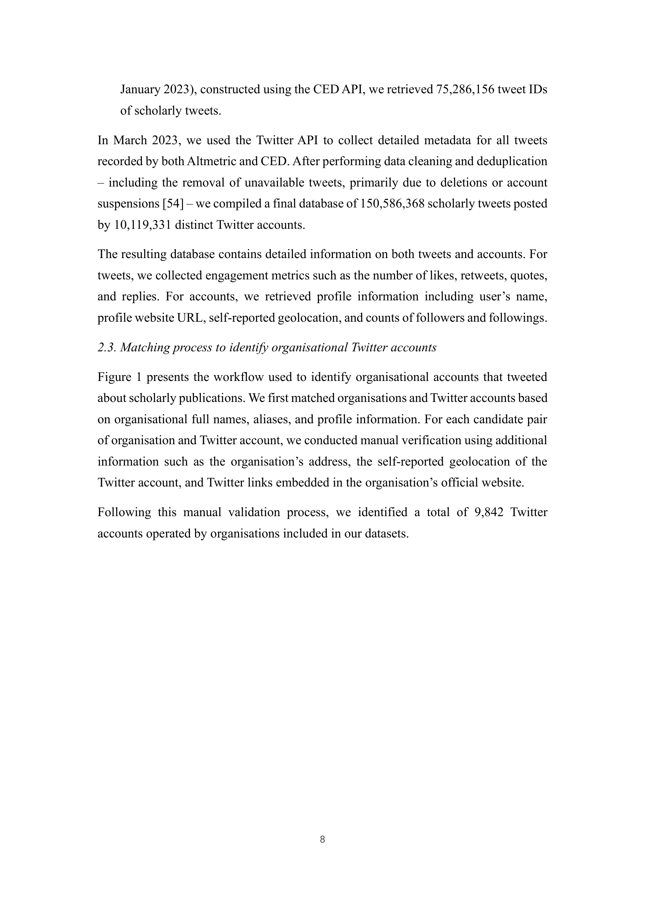
3개 기관 DB와 2개 알트메트릭 DB를 체계적으로 연결하여 학술 커뮤니케이션에 참여하는 기관 계정의 최초 대규모 오픈 데이터셋을 구축하고, 1,000만 사용자 대비 상대적 위치를 정밀하게 분석한 방법론적으로 견고하고 명확하게 작성된 연구로, 알트메트릭스와 과학 커뮤니케이션 분야에 실질적인 기여를 한다.
Modeling Changing Scientific Concepts with Complex Networks: A Case Study on the Chemical Revolution

과학적 개념 변화를 네트워크 구조로 모델링하는 독창적 프레임워크를 제안했으나, 단일 사례에 의존하여 일반화 가능성의 검증이 부족하다.
Interdisciplinary papers supported by disciplinary grants garner deep and broad scientific impact

학제간 펀딩의 역설을 대규모 데이터로 실증한 과학정책적으로 매우 중요한 연구로, 깊은 분야 전문성이 학제간 혁신의 기반이라는 반직관적 발견이 강력하다.
An empirical analysis of open access citation advantages in library and information science

LIS 분야 OA 인용 이점의 조건부적 성격을 보여주는 유용한 기술적 분석이나, 교란변수 통제 부족으로 인과적 해석에는 한계가 있다.
Authorship, titles and open access as drivers of citation performance in orthopaedics: a scientometric analysis
대규모 데이터를 활용했으나 극히 낮은 설명력과 핵심 교란변수 미통제로 인해 인용 성과의 "동인"이라기보다 피상적 상관관계를 보고하는 데 그쳤다.
Bridging the gap between science and society: Mapping libraries' strategies for engaging in the research impact process through semantic analysis

도서관의 연구 영향력 매개 역할을 최초로 체계적으로 매핑한 의미 있는 시도이나, 기술적 분석에 머물러 인과적 효과 검증이 향후 과제로 남는다.
OpenAlex in focus: Metadata quality of publication type and language fields in an open peer review corpus

OpenAlex 메타데이터의 구체적 품질 문제를 체계적으로 문서화한 유용한 연구로, 계량서지학 연구자들에게 데이터 전처리의 중요성을 환기시킨다.
Introducing multiverse analysis to bibliometrics: The case of team size effects on disruptive research
Multiverse 분석이라는 강력한 방법론을 계량서지학에 도입하여 모델 불확실성의 투명한 보고를 가능하게 한 방법론적 기여가 탁월한 연구다.
Information Pathways in Online Science Communication: The Role of Platform Actors and News Media

COVID-19 과학 커뮤니케이션에서 소셜미디어와 뉴스미디어 간 정보 흐름의 다층적 구조를 실증적으로 밝힌 시의적절하고 통찰력 있는 연구다.
BibFusion: A Python package to integrate, deduplicate, and harmonize exported bibliographic records from Scopus and Web of Science for bibliometric analysis

Scopus-WoS 통합이라는 실용적 문제에 대한 체계적 해결책을 제시하나, 성능 검증과 기존 도구 대비 우위 입증이 부족하여 도구의 가치 판단이 어렵다.
Rethinking Thematic Evolution in Science Mapping: An Integrated Framework for Longitudinal Analysis

종단적 과학 매핑의 방법론적 비일관성을 이론적으로 명확히 진단하고 통합적 해결책을 제시했으나, 실증 검증의 부재가 현 단계의 주요 한계다.
Tenure and research trajectories

테뉴어의 다차원적 효과를 전례 없는 규모와 범위로 실증한 과학학(science of science)의 기념비적 연구로, 학술 시스템 설계에 대한 근거 기반 논의에 핵심 기여를 한다.
Are disruptive papers more likely to impact technology and society?

CD index의 사회적 영향 측면에서의 편향을 대규모 데이터로 실증하고 보완 지표를 제안한 의미 있는 연구로, 과학의 파괴성 측정 논의에 중요한 기여를 한다.
Predicting Scientific Breakthroughs Based on Structural Dynamic of Citation Cascades
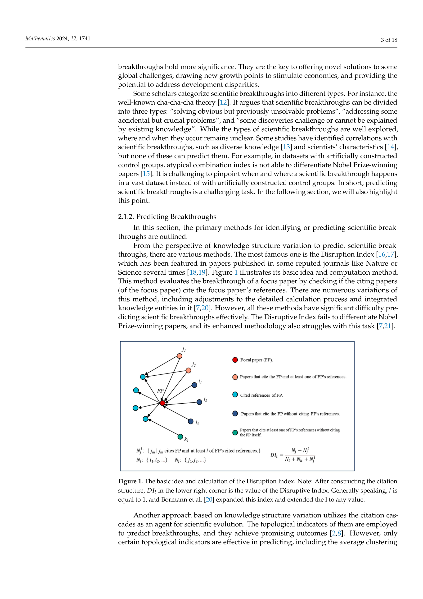
인용 캐스케이드의 동적 구조 진화라는 새로운 관점을 도입하여 돌파구 예측 성능을 개선했으나, 제한된 벤치마크와 실용적 성능 수준의 한계가 남아있다.
Do novel papers attract more social attention?

과학적 새로움이 사회적 관심을 높인다는 직관적이지만 미검증된 가설을 대규모 데이터로 실증한 유용한 연구로, 연구 평가의 다차원적 접근에 기여한다.
The altering landscape of US-China science collaboration: from convergence to divergence

미-중 과학 협력의 수렴-발산 전환을 다차원적으로 실증한 시의적절한 연구로, 과학 외교와 국제 연구정책 논의에 중요한 근거를 제공한다.
Forecasting the future of artificial intelligence with machine learning-based link prediction in an exponentially growing knowledge network

AI 연구 방향 예측이라는 야심찬 비전을 실세계 벤치마크와 다양한 방법론 비교로 구체화한 선구적 연구로, 과학적 발견 지원 AI의 새로운 패러다임을 제시한다.
SciSciNet: A large-scale open data lake for the science of science research

과학학 연구의 데이터 인프라를 혁신적으로 통합한 커뮤니티 자원으로, 분야의 재현성과 접근성을 근본적으로 개선할 잠재력을 가진다.
Forecasting high-impact research topics via machine learning on evolving knowledge graphs

아이디어 단계에서 연구 영향력을 예측하는 혁신적 접근으로, 과학적 발견을 지원하는 AI의 가능성을 한 단계 끌어올린 연구다.
Introducing the open biomedical map of science
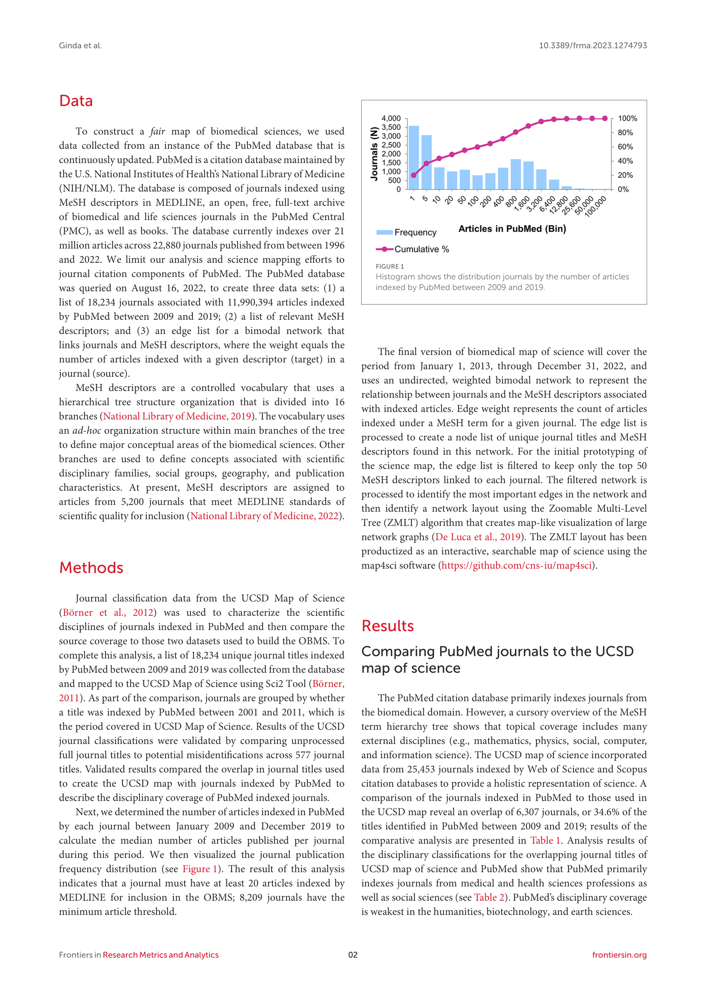
FAIR 원칙에 부합하는 오픈 과학 지도의 필요성과 가능성을 제시한 의미 있는 초기 시도이나, 프로토타입 수준으로 타당성 검증과 완성도 면에서 개선이 필요하다.
Identifying interdisciplinary emergence in the science of science: combination of network analysis and BERTopic

네트워크 중심성과 BERTopic을 결합하여 글로벌 학제간 emergence를 탐지하는 독창적 프레임워크를 제시했으나, 임계값 민감도 분석 부재, 제한된 시간 범위, 기존 방법론과의 비교 실험 결여로 방법론적 엄밀성이 다소 부족하다.
Mapping scientific communities at scale

대규모 bibliometric 데이터의 실시간 네트워크 매핑이라는 실용적 문제를 해결하는 오픈소스 시스템을 제시했으나, 학술 논문으로서의 깊이가 부족하며 정량적 평가와 검증이 전무하여 기술 보고서(technical report) 수준에 머문다.
Science Mapping and Science Maps

Science mapping 분야의 개념적, 방법론적 지형을 비전문가도 이해할 수 있도록 명쾌하게 정리한 우수한 입문서로, 인식론적 논의까지 포함하여 깊이가 있으나, embedding/deep learning 등 최신 방법론의 부재가 아쉽다.
When text mining meets science mapping in the bibliometric analysis: A review and future opportunities

Science mapping의 수학적 프로세스를 통합적으로 정리하고 text mining과의 교차 매핑을 통해 연구 기회를 제시한 유용한 개관이나, 실증적 검증 없이 개념적 제안에 그치며 선정 기준의 과도한 제한으로 표본 대표성에 한계가 있다.
Comparative science mapping: a novel conceptual structure analysis with metadata

Co-word analysis에 메타데이터 세분화를 결합한 comparative science mapping은 방법론적으로 견실하고 정책적 활용 가치가 높은 독창적 기여이나, joint strategic diagram의 시각적 복잡성과 단일 사례 의존이 일반화 가능성에 제약을 준다.
Mapping Knowledge: Topic Analysis of Science Locates Researchers in Disciplinary Landscape
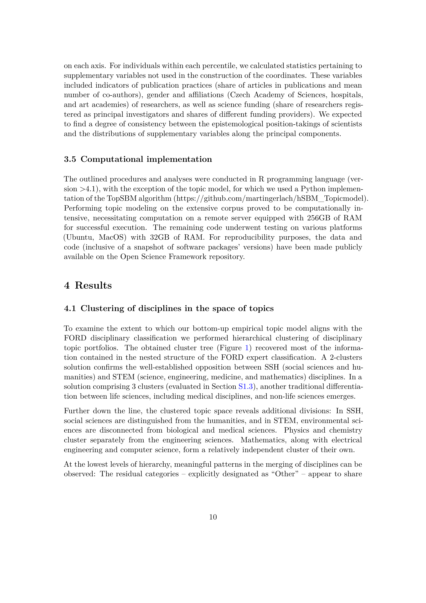
Topic modeling과 compositional/geometric data analysis를 결합하여 개별 연구자를 인식론적 좌표 위에 배치하는 독창적이고 방법론적으로 정교한 연구이나, 체코 단일 국가 데이터와 정적 분석이라는 한계가 일반화 가능성을 제약한다.
Hierarchical Classification of Research Fields in the "Web of Science" Using Deep Learning

44개 학문 분야 전체를 아우르는 통합적 계층 분류 시스템과 field 수준 학제 간 인용 분석이라는 야심찬 목표를 제시하지만, 2018년 MAG 데이터와 기본적 neural network에 의존한 기술적 접근이 현재 기준으로 다소 구식이며, 분류 체계 설계의 주관성과 일부 모델의 저조한 성능이 아쉽다.
A Survey on Knowledge Organization Systems of Research Fields: Resources and Challenges
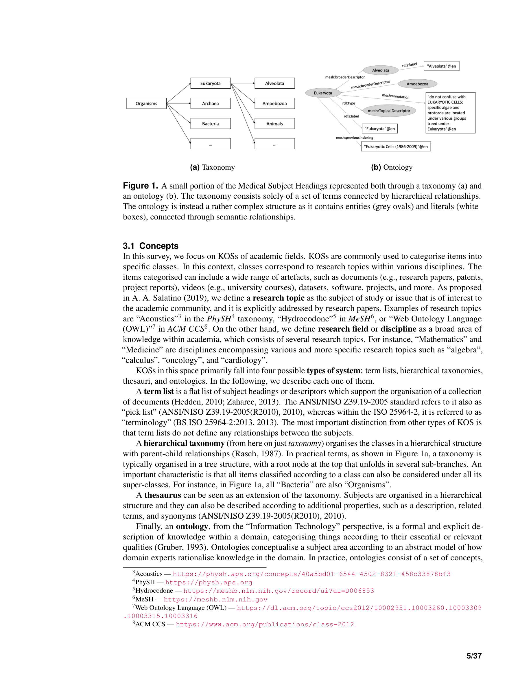
학술 분야 KOS 생태계에 대한 최초의 체계적 서베이로서 45개 시스템을 통일된 프레임워크로 분석하고 핵심 격차와 도전과제를 명확히 정의한 기여가 크지만, 정량적 비교와 LLM 시대의 KOS 역할에 대한 심층 논의가 보완되면 더 큰 영향력을 가질 수 있다.
What's In Your Field? Mapping Scientific Research with Knowledge Graphs and Large Language Models
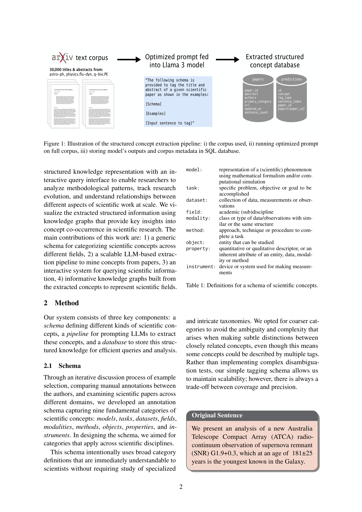
과학 개념의 기능적 역할별 분류라는 아이디어와 SQL 쿼리 가능한 구조화 지식 시스템의 방향성은 흥미롭지만, 44% precision/31% recall의 낮은 추출 정확도와 20편에 불과한 평가 세트로 인해 실용성과 신뢰성 면에서 프로토타입 수준에 머무른다.
Science as exploration in a knowledge landscape: tracing hotspots or seeking opportunity?
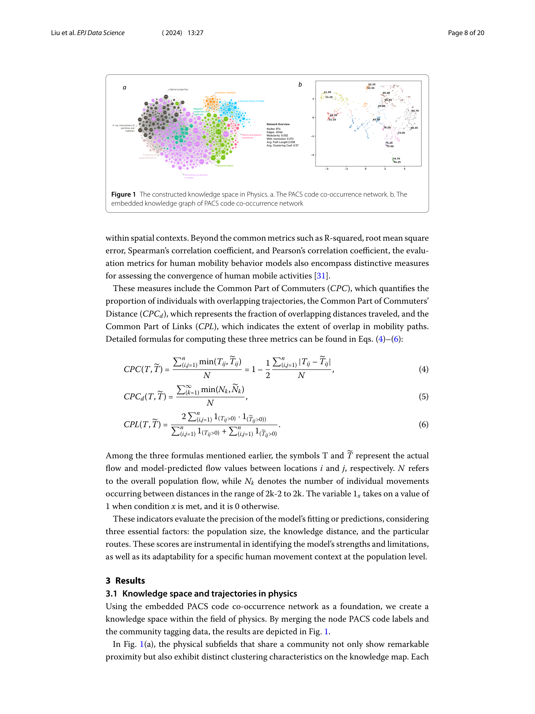
GIS의 인간 이동 패턴 분석 프레임워크를 과학자의 지식 공간 탐험에 창의적으로 적용하여, 대부분의 과학자가 기회 탐색보다 hotspot 추종 전략을 따른다는 실증적 결론을 6개 분야에서 강건하게 도출한 방법론적으로 정교한 연구이다.
Impacts of inter-institutional mobility on scientific performance from research capital and social capital perspectives

Research capital과 social capital 프레임워크를 통해 AI 분야 연구자의 이동 유형별 성과 차이를 체계적으로 분석한 유의미한 연구이나, 성과 측정이 양적 지표에 한정되고 MAG 데이터의 서비스 종료로 재현성에 한계가 있어 방법론적 보완이 필요하다.
Unsupervised embedding of trajectories captures the latent structure of scientific migration
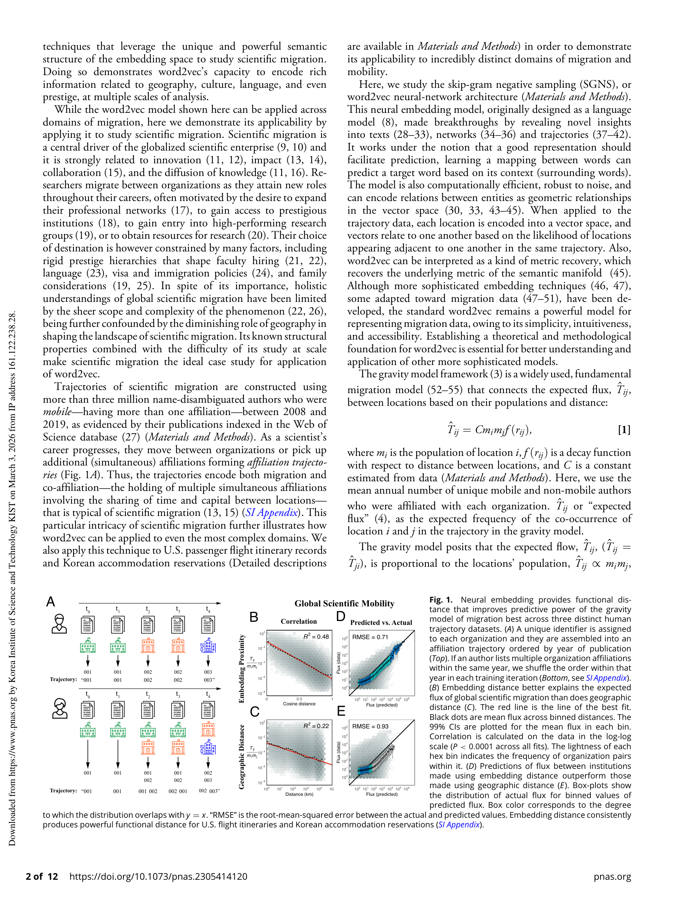
Word2vec와 gravity model의 수학적 동치성 증명이라는 이론적 기여와, 다중 스케일에서 과학 이주의 지리-언어-문화-위신 구조를 체계적으로 밝혀낸 실증 분석이 결합된 탁월한 연구로, neural embedding을 이주 연구에 적용하는 이론적 기반과 방법론적 프레임워크를 확립한 기념비적 논문이다.
Mapping the changing structure of science through diachronic periodical embeddings
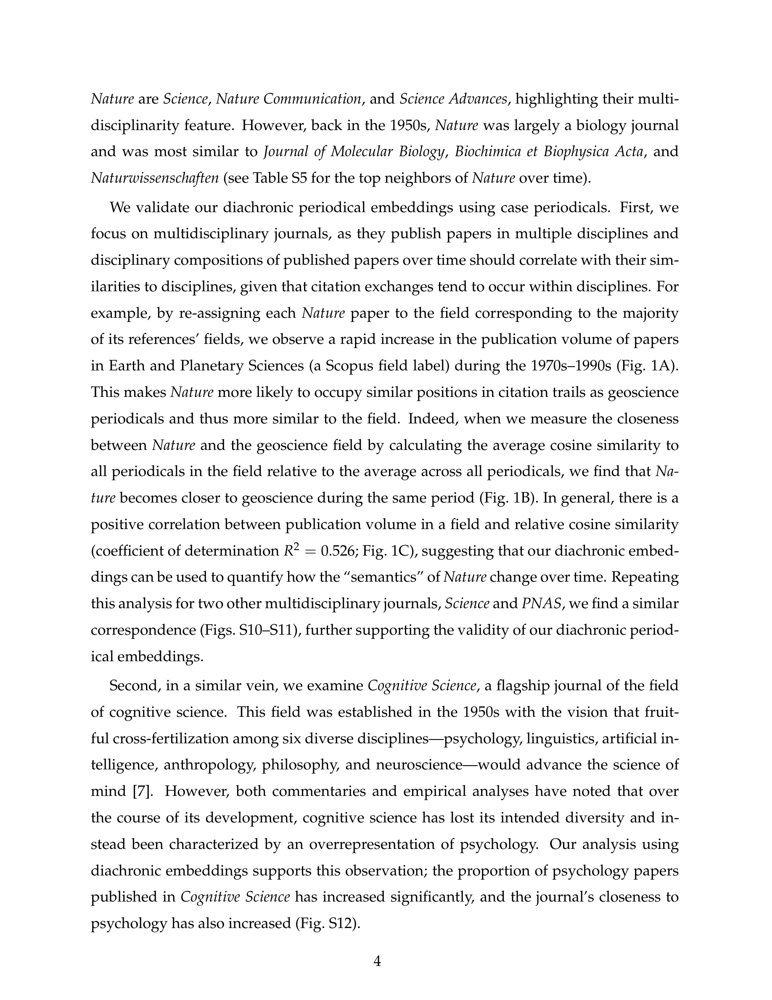
전산언어학의 통시적 임베딩을 과학 진화 분석에 창의적으로 적용하여 저널 수준의 의미 변화 추적, 학제간성 동태 분석, 신흥 주제 감지라는 다차원적 분석 프레임워크를 제시한 견실한 연구이나, 시간 해상도의 거칠기와 신흥 주제 감지의 정량적 검증 부재가 아쉽다.
The Price-Pareto growth model of networks with community structure
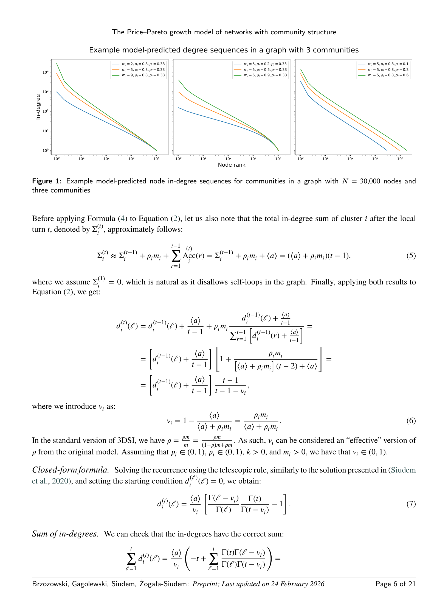
선호적 부착과 커뮤니티 구조를 결합한 최초의 해석적 네트워크 성장 모델로서 수학적 완성도가 뛰어나고 Pareto 수렴 및 Gini 공식 등 이론적 기여가 탁월하나, 실증 검증의 범위가 CS 분야에 한정되고 주의 감쇠 부재로 인한 고차수 노드 과대추정 문제가 실용적 한계로 남는다.
AI-Driven Automation Can Become the Foundation of Next-Era Science of Science Research

AI4SoS라는 새로운 연구 방향을 체계적으로 정의하고 100만 에이전트 규모의 시뮬레이션을 시도한 야심적 비전 논문이나, 개념 증명의 검증 강도가 약하고 시뮬레이션 결과가 이미 알려진 패턴의 부분적 재현에 그쳐, 비전의 실현 가능성을 설득력 있게 보여주지 못한다.
Open Datasets in Learning Analytics: Trends, Challenges, and Best PRACTICE

Learning analytics 분야의 공개 데이터셋 현황을 가장 포괄적으로 정리한 유용한 참고 자료이나, 서베이 논문의 특성상 방법론적 혁신보다는 정리와 분류에 초점이 맞춰져 있으며, Science of Science 관점에서의 분석적 깊이(예: 데이터 공개와 연구 영향력의 관계)가 아쉽다.
The selective use of physics knowledge in policy: how interdisciplinary physics bridges subfields and shapes policy influence

과학 지식의 정책 활용에서 가시성과 영향력의 분리를 실증한 참신한 연구로, 학제간 물리학이 정책 진입의 gateway이지만 영향력의 driver는 아니라는 역설적 발견이 Science of Science와 science policy 분야에 중요한 시사점을 제공한다.
Partisan disparities in the funding of science in the United States
정치적 양극화 시대에 과학 펀딩의 초당파적 성격을 실증한 시의성 높은 연구로, 40년간의 포괄적 세출 데이터를 활용한 점이 강점이나, 인과 식별 전략의 부재와 국방 R&D의 지배적 영향에 대한 보다 세밀한 분석이 아쉽다.
Funding the Frontier: Visualizing the Broad Impact of Science and Science Funding

과학 펀딩의 사회적 영향을 다차원적으로 시각화하는 야심찬 시스템으로, 18억 건의 인용 링크를 활용한 대규모 데이터 통합과 직관적 시각화 설계가 인상적이나, 시스템 논문 특유의 분석적 깊이 제한과 예측 모델의 실용성 검증이 향후 과제로 남는다.
Sci2Pol: Evaluating and Fine-tuning LLMs on Scientific-to-Policy Brief Generation
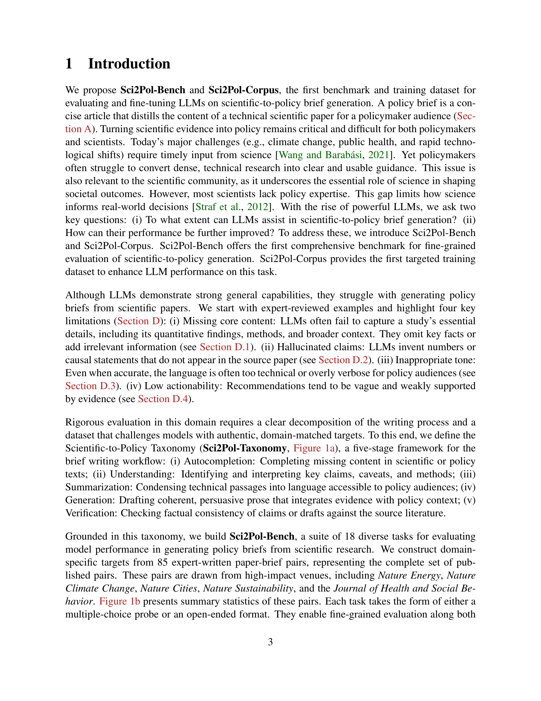
과학-정책 번역이라는 중요하고 과소 연구된 과제에 대해 체계적인 벤치마크와 학습 데이터셋을 최초로 제시한 견실한 연구로, 5단계 분류체계 설계, 대규모 LLM 평가, 도메인 특화 파인튜닝의 효과 입증 등 다방면의 기여가 돋보이나, 분야 편중과 소규모 데이터셋이라는 현실적 제약이 일반화 가능성을 제한한다.
Early career setback and future achievement in professional sports

Wang et al. (2019)의 "early-career setback" 패러다임을 스포츠로 확장한 견실한 실증 연구로, 두 가지 독립적 스포츠 맥락과 다양한 robustness check가 인상적이나, 메커니즘 규명 없이 현상 기술에 머물러 있어 이론적 기여는 제한적이다.
The Rise of Large Language Models and the Direction and Impact of US Federal Research Funding

LLM이 미국 연방 연구비 생태계를 어떻게 변화시키고 있는지를 기밀 제안서 데이터와 공개 수상 데이터를 결합하여 체계적으로 분석한 선구적 연구로, 아이디어 동질화와 기관별 차등 효과라는 핵심 발견은 과학 정책에 즉각적 함의를 갖는다.
Unequal effects of the COVID-19 pandemic on scientists
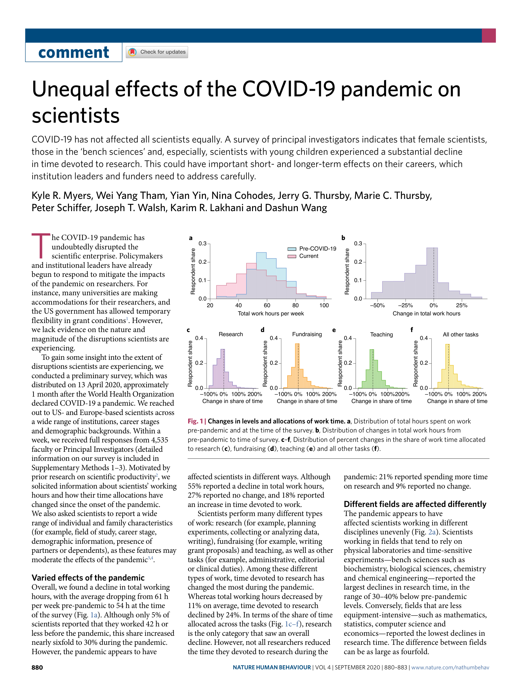
팬데믹 초기에 과학자 집단 내 불균등한 영향을 정량적으로 보여준 시의적절하고 영향력 높은 연구로, 낮은 응답률과 자기보고 한계에도 불구하고 성별-돌봄 부담 교차점이라는 핵심 발견이 후속 정책 논의와 연구의 토대를 마련했다.
SciSciGPT: advancing human–AI collaboration in the science of science
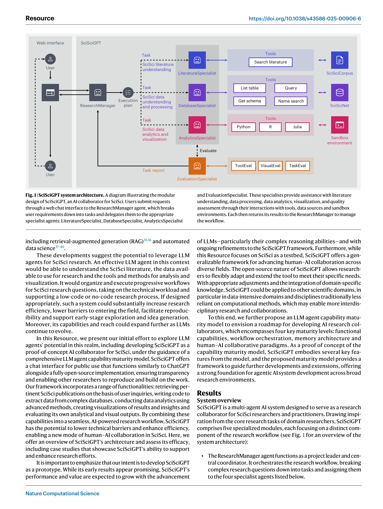
SciSci 분야를 테스트베드로 한 도메인 특화 AI 연구 협력자의 설득력 있는 프로토타입으로, multi-agent 아키텍처와 자기평가 메커니즘이 잘 설계되었으나, 탐색적 평가에 머물러 실제 연구 현장에서의 효용성과 신뢰성에 대한 보다 엄격한 검증이 필요하다.
The Empowerment of Science of Science by Large Language Models: New Tools and Methods

LLM 기술과 SciSci의 교차점을 폭넓게 조망하려는 시도는 의미 있으나, 기술 소개가 피상적이고, 제안된 방법론의 평가가 부재하며, 학술적 완성도가 낮아 현재 상태로는 분야에 대한 실질적 기여가 제한적이다.
The strain on scientific publishing

학술 출판의 지속가능성 위기를 다중 메트릭으로 체계적으로 진단한 시의적절하고 영향력 있는 연구로, "impact inflation" 신규 지표와 special issue의 차별적 처리 문서화가 특히 가치 있으며, 출판사-연구자-연구비 기관 삼각관계의 개념 프레임워크가 정책 논의의 토대를 제공한다.
제외된 항목
24_Real-World_Evidence_in_the_First_Round_o— not a paper or corrupted PDF49_Atlas_of_Science_Collaboration_1971202— not a paper or corrupted PDF
Claude Code powered by Oh-My-ClaudeCode, SKILL by Jehyun LEE jehyun.lee@gmail.com